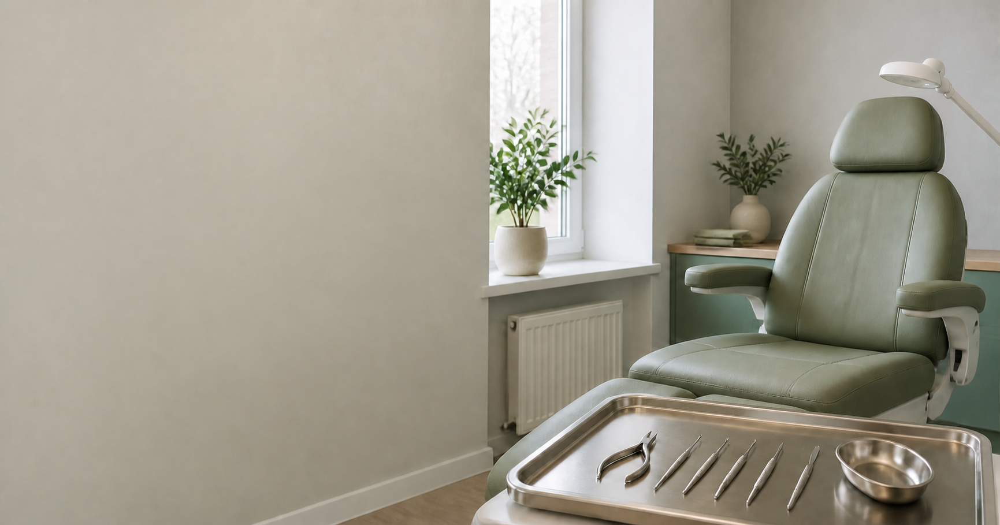

Подолог во Всеволожске
Профессиональный уход за стопами и ногтями
Мария Колесник, дипломированный подолог с медицинским образованием и стажем 24 года.
Перейти к записи
С какими задачами обращаются к подологу
Подологический приём подходит для регулярного профессионального ухода и работы с распространёнными проблемами стоп и ногтей.
- Профилактический и медицинский аппаратный педикюр
- Обработка ногтевых пластин и кожи стоп
- Работа с гиперкератозом, трещинами и мозолями
- Обработка вросшего ногтя
- Коррекция ногтя с помощью нитиноловой нити
Услуги и цены
На основной странице собраны точные названия услуг, описания и стоимость. Информация разделена по четырём направлениям, чтобы нужную процедуру было проще найти.
Смотреть услуги и цены- Комплексный уход
- Полная обработка ногтей и стоп
- Обработка ногтей
- Профилактический и медицинский уход
- Кожа стоп
- Обработка кожи, трещин и гиперкератоза
- Локальная помощь
- Мозоли, вросший ноготь и коррекция
Безопасность и индивидуальный подход
3-этапная стерилизацияВсе инструменты проходят полный цикл обработки.
Медицинское образованиеСпециальность «Сестринское дело».
Для всей семьиПрофессиональный уход для клиентов разного возраста.
Домашний уходИндивидуальный подбор средств после процедуры.
Приём во Всеволожске
Адрес: Всеволожск, Октябрьский проспект, 90.
- Рабочие дни
- Понедельник, пятница и суббота
- Время приёма
- 10:00, 12:00, 14:00, 16:00, 18:00
Частые вопросы
Где проходит приём подолога?
Приём проходит во Всеволожске по адресу: Октябрьский проспект, 90.
В какие дни можно записаться?
Рабочие дни: понедельник, пятница и суббота. Время приёма: 10:00, 12:00, 14:00, 16:00 и 18:00.
Как записаться на приём?
Основной способ записи: сообщение в мессенджере MAX. Также доступны телефон, WhatsApp, Telegram и ВКонтакте.
Где посмотреть стоимость услуг?
Полный список услуг, описания и актуальные цены размещены на главной странице сайта.
Запись на приём
Выберите удобный способ связи в разделе контактов.